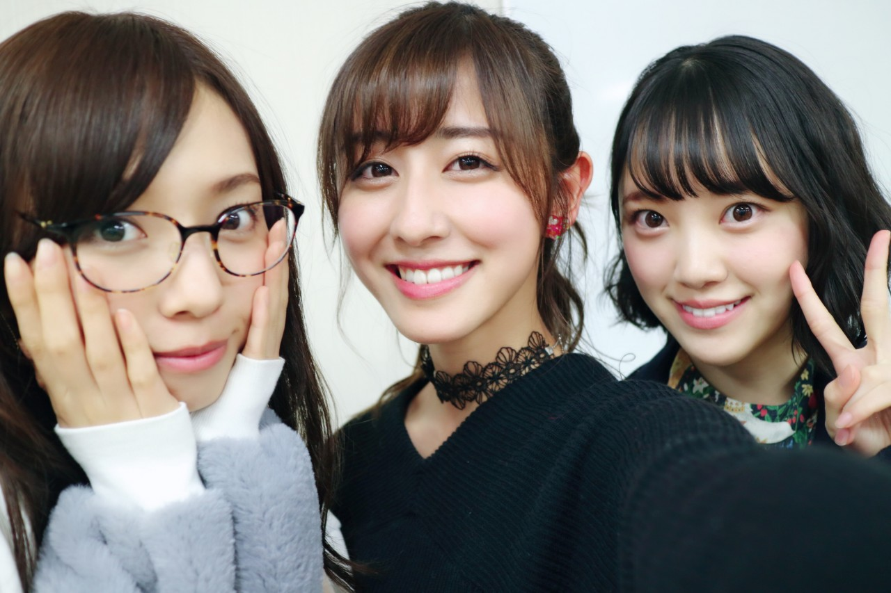

| 2017/01 24 Tue | あなたがいれば〜それだけで |
ちはるーむへようこそ
25歳を迎えたまいちゅんと
成人を迎えた私たち。
Wでおめでとうショットです(﹡ˆ ˆ﹡)

1枚目のまいちゅんの笑顔が最高◎
------------------------------------------♡
！ChihAnswer！
 あつみさん
あつみさん
・やっぱりスポーツ関係のお仕事はやってみたいですか？
→とてもやってみたいです！
大好きなスポーツなので、一緒にお仕事が出来たら
ものすごい嬉しいです。
スポーツのお仕事出来るように頑張ります！
 やっちゃんさん
やっちゃんさん
・テスト終わったらしてみたいことってありますか？
→なんだろうな〜のんびりお買い物もしたいし
夜たっぷり寝たいし、早く終わって解放されたい！
テスト終わったらお仕事との兼ね合いとか考えなくて
よくなるからね〜
あと3日。
 トモハルさん
トモハルさん
・NFL関係で叶えてみたいこと、やってみたいことってなにかありますか？
→やっぱり、スーパーボウルを現地で
生で見てみたいって凄い思います。
世界最高峰のプレーを目に焼き付けたい！
私の夢です。
うさP-!さん
・ターンも苦手ということですが、ダンスに影響はないですか？これは、きついなと思う振り付けは何ですか？
→実はガールズルールが大変なんです...
サビに何回も何回もターンするので...
リハの時も目回ってしまうのでリハの時だけ
ゆっくりターンしてるんだけど
まだまだ全然慣れないの(> <)
 あかりさん
あかりさん
・ちーちゃんイヤリング？ピアス空いてるの？あと、どこで買ってるのか教えて欲しいです！
→私はピアスあいてないからイヤリングだよ！
必ずここのお店で買う！とは決めてないから
パッと目に入った時に可愛いと思ったのを
いつも買ってるよ〜
最近はハンドメイドのイヤリングが好き。
ikiさんやKAKERAさんや二ロス屋さんなどの
ハンドメイドイヤリングが特にお気に入り！
今日はここまで！
いつもより沢山の質問が来ていたような気がして
私は凄い嬉しかったですヽ(；；)丿
みなさんありがとうございました！！
また待ってます。
------------------------------------------------♡
♬ ChihaMusic
「TRACE」WANIMAさん
最近凄い好きなWANIMAさん。
歌詞が本当にいい。
元気が出るし頑張ろうと思える。
聞いたらいい曲すぎて少し涙も出そうになる。
"振り切れず抱えたまま怯えて
耐えるだけ この痛みに慣れるまで
いつも期待しては待ちくたびれ
それでも待ち続けた"
辛い事も正直沢山あって
この痛みはなかなか癒えないけど
"あなた"がいれば頑張れる。
いい曲だな〜
このブログ、途中まで書いてたのに
一回全部消えちゃって
凄い悲しい気持ちになった(> <)
赤ニット。
真洋が写真撮ってくれたよ〜♡
陽射しがいい感じだったので沢山撮りました◎
また別バージョンも載せるね！
さ、勉強頑張ろ。
おやすみ
斎藤ちはる
コメント(252)
2017/01/24 23:54